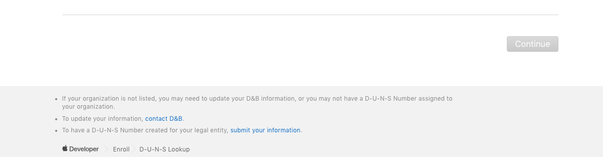
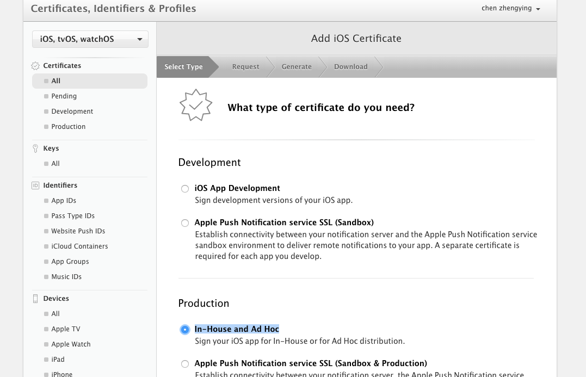
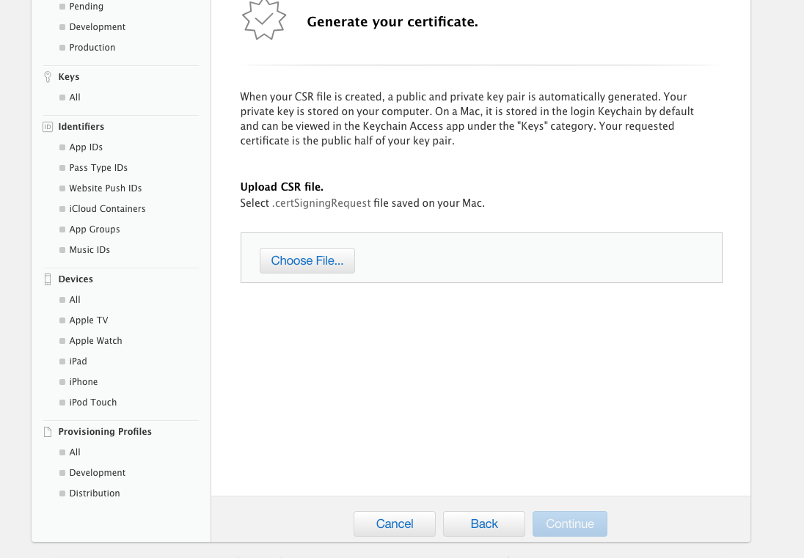
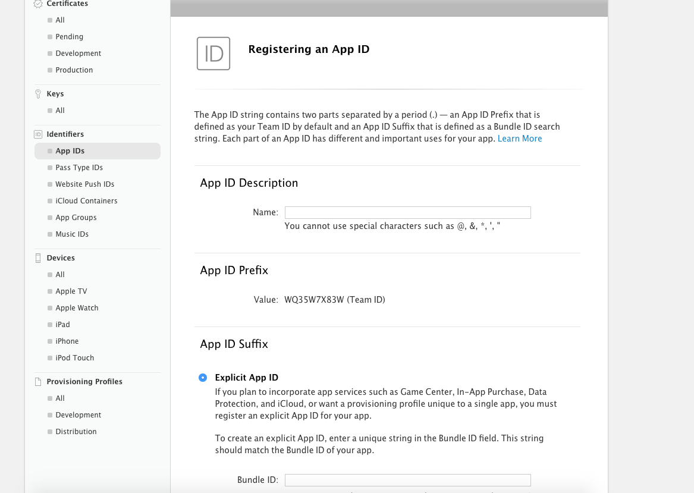
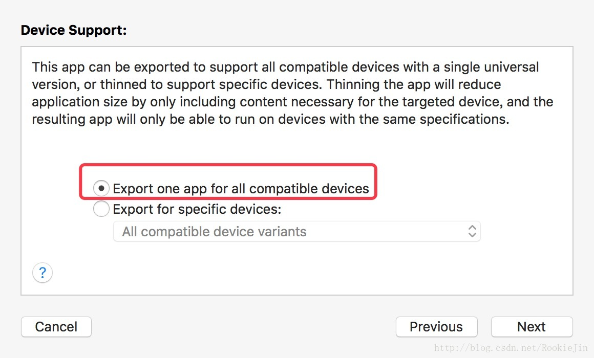
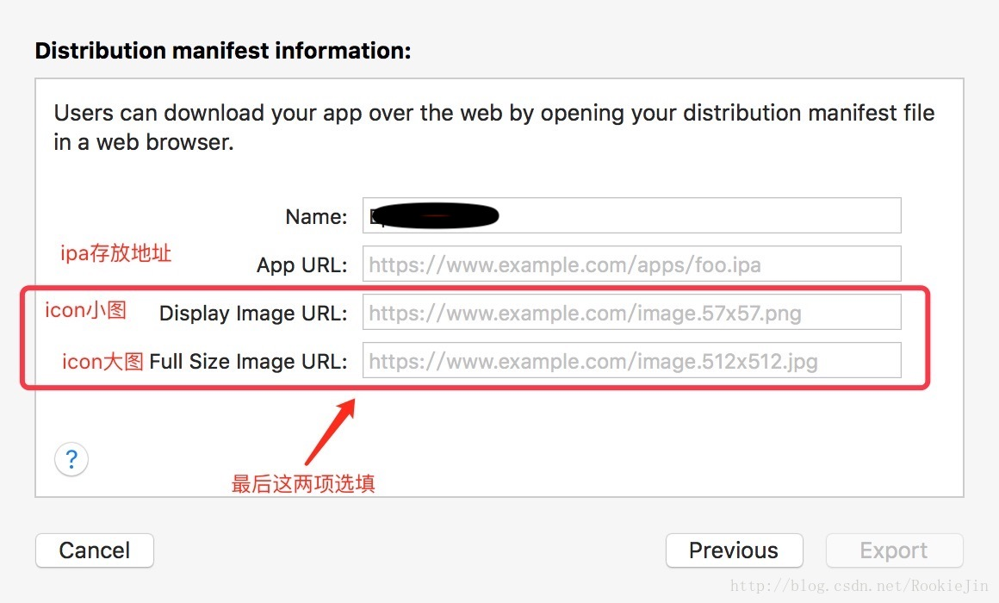

iOS企业开发者账号的申请与打包上架
2018年的工作的第一个任务就是申请公司的企业版开发者账号，在历时2个多月后，打了无数次开发者热线，终于申请下来了， 其中申请邓白氏编码花费2个礼拜, 剩余的时间基本都是在处理账号的申请；
一、 准备工作
1. 申请企业开发中账号，前提需要一个Apple ID， 最好在一开始确定下来你的Apple ID 账号， 对于企业版开发者账号来说, Apple ID对应的邮箱必须是企业邮箱， 并且后缀必须与官网域名一致， 否则后续不能通过审核，
2. 公司的营业执照， 公章， 或许会需要你的个人身份证或者在职证明；
3. 公司的座机号码， 这个一定要填你能够随时接到的电话， 后续苹果审核人员会打电话到这个号码确认身份； 乱报号码会导致核对失败 从而不能通过审核；
4. 你需要申请企业版开发者账号的动机， app的使用范围， 以及未来app的使用人数， app的使用范围一定是只能内部使用的， 使用人数太少, 他们会建议你不要使用企业版的开发者账号，建议在实际使用人数上稍微加一点；
二、 企业邓白氏编码的申请
1.打开苹果开发者网站， 登录你的Apple ID;
2.申请之前应该先查看公司是否申请过邓白氏编码， 查看地址：https://developer.apple.com/enroll/duns-lookup/
3.如果没有申请到，可以点击下方的"submit your information"， 如下图：
4.提交申请之后，邮箱会受到邓白氏发来的信息确认邮件， 填写相关的公司资料， 正常情况下， 一个星期左右， 邓白氏会将邓白氏编码发送待你的邮箱；
5.如果存在问题，可以下这里拨打华夏邓白氏的联系方式：http://www.dnbchina.com/contact/index.html
三、 企业版开发者账号的申请
1. 企业版开发者账号申请链接：https://developer.apple.com/programs/enterprise/enroll/cn/
在这里你可以看到申请企业版开发者账号的条件：
1): 适用于您员工的 App(组织内的员工);
2): 法人实体状态;
3): D-U-N-S® 编号;
4): 法律约束授权；
5): Apple ID(企业邮箱，后缀为公司域名);
6): 企业有自己网站;
2. 点击开始注册， 选择实体类型：公司/组织；继续；
3. 填写企业信息后，点击申请;
4. 正常情况下， 一个礼拜左右就会有审核人员打电话确认申请的目的和确认公司的信息，这次一般会确定好下次拨打企业座机的时间， 座机电话一定要接到，这是他们用来确认你是否在这个单位工作；期间如果遇到有问题，可能还会要求上传个人的身份证，在职证明等；
5. 审核通过后就来到了付款环节，和公司版开发者账号一下，付款时存在的问题就是：付款的卡有限制，一般是用visa+银联， 单纯只有 银联标志的卡付款会出现授权失败的问题； 还有， 只能开普票；
6. 付款完成后，不能马上制作证书， 苹果会要求两个礼拜的时间用来录数据， 谨慎起见， 这一段时间最好不要操作证书；
四、 企业版开发者证书的制作
企业版证书的之后与公司版证书的制作基本一致，打开Certificates, IDs & Profiles, 点击Certificates/All:
1. 点击邮编的"+"， 选择 Production -> In-House and Ad Hoc -> Continue:
上传从钥匙串证书助理请求来的CSR文件:
2. 点击App ID， "+"，添加name(描述), 添加Bundle ID(必须与APP的bundleID完全一致)；
3. Devices: 企业版不需要device即iPhone的UDID，因此跳过；
4.选择Provisioning Profile->ALL，点击右上角加号，选择Distribution -> In House, 生成最终的Provisioning Profile并下载；
五、 企业版App的打包上架
1.Xcode 中登录开发者账号Apple Id
2.点击PROJECT –> Build Settings –> 对应选择Profile和证书,账号
3.点击Project –> Edit Scheme –> 修改为Release, 把运行设备改为真机或者Generic iOS Deveice, 点击Project –> Archive ->Validate –> 右侧Export -> 选择 Save for Enterprise Deployment -> 选择 Export one app for all compatible devices
4.设置ipa地址、icon地址， 这个的URl必须为https:
5.填写完成后，点击export。Xcode会生成一个.plist和ipa文件; 将ipa上传至之前填写的url地址上。 然后将.plist文件上传至https能够访问的服务器，如git或者公司自己的服务器, 能够实现https访问。
6. itms-services:///?action=download-manifest&url=xxxxx; xxxxx 填写的是你的plist文件存放的地址， 在Safari里面输入上面的地址，就可以下载app。 下载安装完成后，设置-通用-设备管理-“你公司的证书”-信任 之后就可以打开app进行测试了。